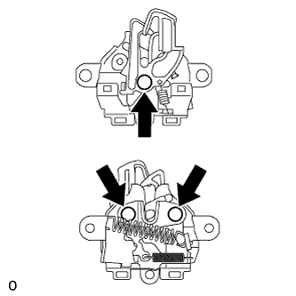
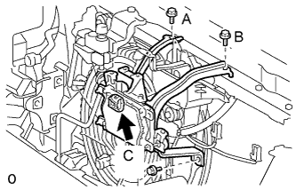
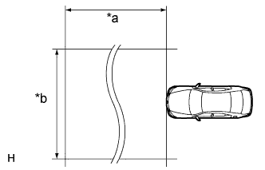
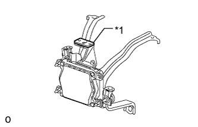
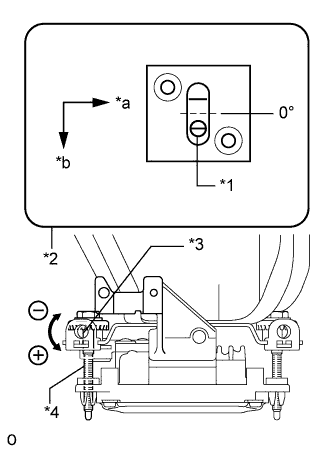
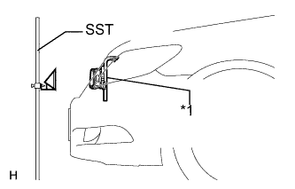
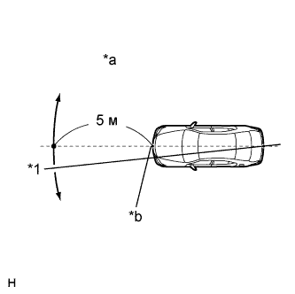
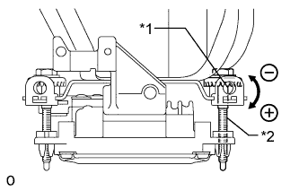

ВЫКЛЮЧАТЕЛЬ ОСВЕЩЕНИЯ ПРОЕМА КАПОТА ДВИГАТЕЛЯ > УСТАНОВКА |
| 1. УСТАНОВИТЕ ЗАМОК КАПОТА В СБОРЕ |
|  |
Нанесите на рабочие поверхности трения замка универсальную консистентную смазку.
Подсоедините тросик управления замком капота.
Подсоедините разъем.
Установите замок капота в сборе и закрепите его 3 болтами и гайкой замка капота.
| 2. УСТАНОВИТЕ КРЫШКУ ТРОСА УПРАВЛЕНИЯ ЗАМКОМ КАПОТА |
Пропустите трос управления замком капота через крышку троса управления замком капота.
Введите в зацепление захват и установите крышку троса управления замком капота.
Вверните 2 болта.
| 3. УСТАНОВИТЕ НИЗКОЧАСТОТНЫЙ ЗВУКОВОЙ СИГНАЛ В СБОРЕ (для моделей с левосторонним рулевым управлением) |
Установите низкочастотный звуковой сигнал и закрепите его болтом.
Подсоедините разъем.
| 4. УСТАНОВИТЕ ВЫСОКОЧАСТОТНЫЙ ЗВУКОВОЙ СИГНАЛ В СБОРЕ (для моделей с левосторонним рулевым управлением) |
Установите низкочастотный звуковой сигнал и закрепите его болтом.
Подсоедините разъем.
| 5. УСТАНОВИТЕ ЗАЩИТНЫЙ ЭЛЕМЕНТ РЫЧАГА РАЗБЛОКИРОВКИ ЗАМКА КАПОТА |
Введите в зацепление 2 захвата и 2 направляющих, чтобы установить защитный элемент рычага разблокировки замка капота.
| 6. УСТАНОВИТЕ ДАТЧИК РАДАРА МИЛЛИМЕТРОВОГО ДИАПАЗОНА В СБОРЕ (для моделей с динамической радарной системой круиз-контроля) |
|  |
Установите датчик и закрепите его 3 болтами в алфавитном порядке.
Подсоедините разъем датчика.
| 7. УСТАНОВИТЕ РЕШЕТКУ РАДИАТОРА |
Установите решетку радиатора и введите в зацепление 8 захватов.
Установите 2 винта и 2 фиксатора.
| 8. УСТАНОВИТЕ ДАТЧИК РАДАРА МИЛЛИМЕТРОВОГО ДИАПАЗОНА В СБОРЕ (для моделей с динамической радарной системой круиз-контроля) |
|  |
| *a | Примерно 10 м (32,8 фута) |
| *b | Примерно 14 м (45,9 фута) |
Перед регулировкой диаграммы направленности радара выполните следующие действия.
Проверьте давление в шинах и измените его, если необходимо.
Освободите автомобиль от лишнего груза (багаж, тяжелые предметы и пр.).
Проверьте и отрегулируйте положение датчика радара по вертикали.
|  |
Удалите с подставки датчика радара грязь, масло и посторонние материалы.
| *1 | Уровень |
Поместите уровень на подставку датчика радара.
|  |
Убедитесь, что пузырьки воздуха уровня находятся в области, ограниченной красной рамкой.
| *1 | Воздушный пузырек |
| *2 | Уровень |
| *3 | Отверстие для вставки отвертки |
| *4 | Болт A |
| *a | LH |
| *b | Передняя сторона |
| Направление регулировки | Порядок регулировки | Угол регулировки (для справки) |
| Регулировка положения по вертикали | Вверх: Вращайте болт A в положительную (+) сторону | За каждый оборот отвертки датчик перемещается на угол примерно 0,12°. |
| Вниз: Вращайте болт A в отрицательную (-) сторону |
|  |
Отрегулируйте высоту отражателя.
| *1 | Датчик радара миллиметрового диапазона в сборе |
Отрегулируйте положение отражателя так, чтобы центр отражателя SST находился на одной высоте с датчиком радара миллиметрового диапазона.
|  |
Установите отражатель.
| *1 | Веревка |
| *a | Отрегулируйте положение центра, перемещая веревку вправо-влево |
| *b | Протяните веревку через метку центра спереди |
Подвесьте веревку с грузом в центре задней эмблемы автомобиля. Отметьте на грунте заднюю центральную точку автомобиля. Повторите процедуру с передней стороны автомобиля.
Закрепите один конец веревки в центральной точке задней стороны автомобиля. Протяните веревку через центральную точку передней стороны автомобиля до положения 5 м (16,4 фута) за этой точкой, как показано на рисунке. Отметьте точку на расстоянии 5 м (16,4 фута).
Поместите отражатель (SST) в отмеченное положение.
| *a | Точка размещения отражателя | *b | Положение датчика радара миллиметрового диапазона |
Проверьте оптическую ось радара.
Подсоедините портативный диагностический прибор к DLC3.
Установите замок зажигания в положение ON (ВКЛ).
Включите питание портативного диагностического прибора и включите главный выключатель системы круиз-контроля.
Выберите пункт "Auto" на экране портативного диагностического прибора. *1
Выберите на экране пункт "Radar Cruise" (радарная система круиз-контроля).
Откройте окно "Utility" (служебные функции).
Откройте окно "Beam Axis Adjustment" (Регулировка оптической оси).
Следуя указаниям на экране диагностического прибора, выберите "Next".
Проверьте следующие значения на экране данных об отклонении в радарной системе круиз-контроля.
Проверьте и отрегулируйте направление датчика радара по горизонтали.
Проверьте, чтобы отклонение оптической оси радара составило 0°.
|  |
На основе измеренного отклонения оси луча отрегулируйте положение болта B с помощью отвертки для установки датчика радара миллиметрового диапазона в надлежащее положение по горизонтали.
| *1 | Отверстие для вставки отвертки |
| *2 | Болт B |
| Направление регулировки | Порядок регулировки | Угол регулировки (для справки) |
| Регулировка положения по горизонтали | Вправо: вращайте болт B в положительную (+) сторону | За каждый оборот отвертки датчик перемещается на угол примерно 0.07 °. |
| Влево: вращайте болт B в отрицательную (-) сторону |
Нажмите "Next". Параметры датчика радара автоматически сбрасываются.
Отсоедините портативный диагностический прибор от DLC3.
Снова проверьте и отрегулируйте положение датчика радара по вертикали.
Поместите уровень на подставку датчика радара.
| *1 | Уровень |
Убедитесь, что пузырьки воздуха уровня находятся в области, ограниченной красной рамкой.
| *1 | Воздушный пузырек |
| *2 | Уровень |
| *3 | Отверстие для вставки отвертки |
| *4 | Болт A |
| *a | LH |
| *b | Передняя сторона |
| Направление регулировки | Порядок регулировки | Угол регулировки (для справки) |
| Регулировка положения по вертикали | Вверх: Вращайте болт A в положительную (+) сторону | За каждый оборот отвертки датчик перемещается на угол примерно 0,12°. |
| Вниз: Вращайте болт A в отрицательную (-) сторону |
| 9. УСТАНОВИТЕ ВЕРХНЕЕ УПЛОТНЕНИЕ КРОНШТЕЙНА РАДИАТОРА |
Установите верхнее уплотнение кронштейна радиатора и закрепите его 13 фиксаторами.